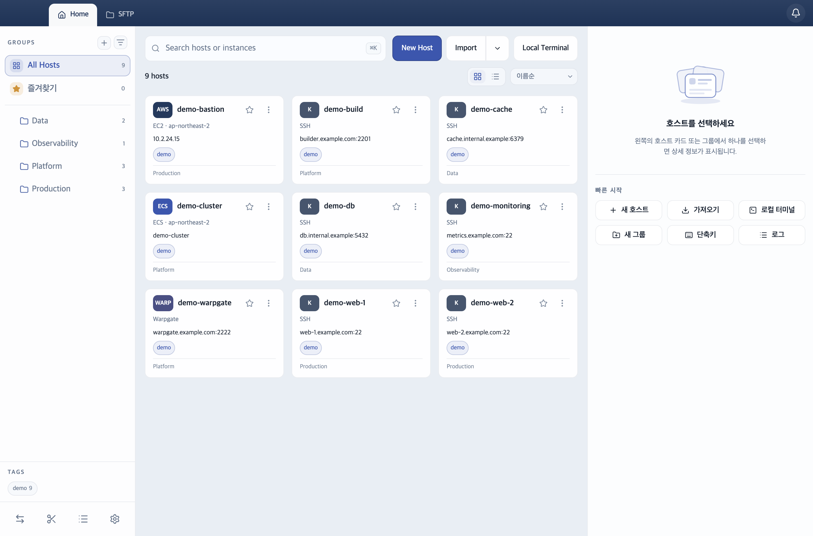
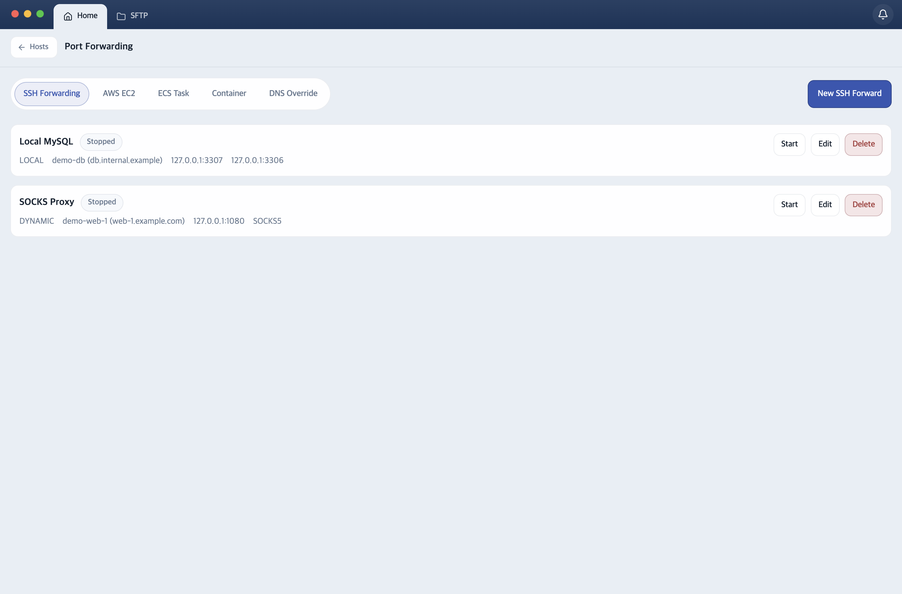

일반 SSH부터 EC2 SSM, tmux, SFTP, 포트 포워딩까지 한 앱에서. 호스트·키·스니펫은 종단간 암호화(E2EE)로 동기화되고, 동기화 서버도 직접 띄울 수 있습니다.

일반 SSH부터 AWS SSM, 컨테이너, tmux까지 — 서버 작업의 전 과정을 하나의 워크스페이스로 다룹니다.
일반 SSH, EC2 SSH-over-SSM, SSM shell fallback, ECS Exec, SFTP, 포트 포워딩을 한 앱에서. SSH Agent 인증과 Agent Forwarding 지원.
원격 tmux 윈도우를 앱 탭으로, 패인을 분할 화면으로. 탭을 닫아도 detach라 세션이 살아 있고, 다시 붙으면 이어집니다.
현재 세션의 호스트 정보와 터미널 출력을 바탕으로 질문하고, 조회는 자동·변경은 승인 후 실행. OpenAI 호환 · Claude · Codex 지원.
종료된 터미널 세션을 타임라인으로 다시 봅니다. 녹화는 로컬에만 저장되고 서버로 전송되지 않습니다.
호스트·시크릿·스니펫을 종단간 암호화로 데스크톱↔모바일 동기화. 동기화 서버(sync-api)는 Docker 한 줄로 직접 띄울 수도 있습니다.
앱 자체가 tailnet 노드로 참여합니다. Tailscale 클라이언트도 VPN 권한도 없이 tailnet 안의 호스트에 붙고, OS의 라우팅·DNS는 건드리지 않습니다.
Local / Remote / Dynamic 포워딩과 SSM 포워딩, 컨테이너 터널을 목록으로 관리합니다. 점프 호스트를 거치는 연결도 저장된 호스트를 ProxyJump로 지정하면 끝.

SSH 클라이언트의 기본기는 비밀 관리입니다. Dolgate의 원칙은 단순합니다 — 비밀값은 평문으로 어디에도 남지 않습니다. 자세한 설계는 데이터 보호 문서에 공개되어 있습니다.
브라우저 로그인과 동기화를 담당하는 sync-api는 단일 컨테이너입니다.
띄운 뒤 앱 로그인 화면에서 서버 주소만 바꾸면 됩니다.
docker run -d --name dolgate-sync-api \ -p 8080:8080 -v dolgate-sync-api-data:/app/data \ ghcr.io/doldolma/dolgate-sync-api
상세 설정은 자체 호스팅 가이드를 참고하세요.
모든 플랫폼이 하나의 버전으로 함께 릴리즈되고, 데스크톱 앱은 자동 업데이트를 지원합니다.
Linux rpm(Fedora·RHEL)과 ARM64 빌드는 릴리스 페이지에서 받을 수 있습니다.